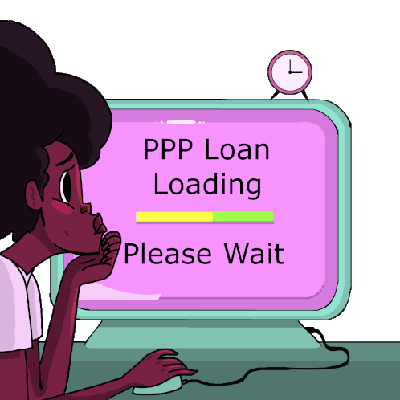

Skin Cancer, particularly Melanoma, poses a significant global fatality risk, with early-stage diagnosis offering high curability. However, visually recognizing melanoma in dermoscopy images is challenging due to the likeness between malignant and benign cases. This project implements a two-stage approach employing Convolutional Neural Networks (CNNs): first, precise skin lesion segmentation using DoubleU-Net, and second, classification with diverse CNN architectures (DenseNet201, ResNet152V2, EfficientNetB7, InceptionV3, InceptionResnetV2) for melanoma detection. This integration of classification with segmentation enhances diagnostic accuracy, extracting specific features from segmented lesions, rather than the entire dermoscopy image.
This project focuses on toxic comment classification using natural language processing (NLP) to identify and flag harmful online comments. It implements a neural network-based model, utilizing essential libraries such as Pandas, TensorFlow, and Gradio. The process includes data preprocessing, a detailed neural network architecture, model training, evaluation with metrics, and user-friendly deployment, making it effective for addressing online toxicity.

This OCR (Optical Character Recognition) project utilizes OpenCV for image preprocessing and Tesseract for text recognition from images containing text. OCR is a technology that extracts text from images, making it possible to convert scanned documents, images, or handwritten text into machine-readable text.

This project involves three realistic data analytics case studies from the marketing, people and fast moving consumer goods analytics domain.

This project tackles the challenge of predicting job retention in businesses that received Paycheck Protection Program (PPP) funds during the Covid-19 pandemic using publicly available SBA PPP loan data. By addressing the controversy of relief fund distribution, it aims to offer insights into job retention factors through data preprocessing, feature engineering, and a neural network model.